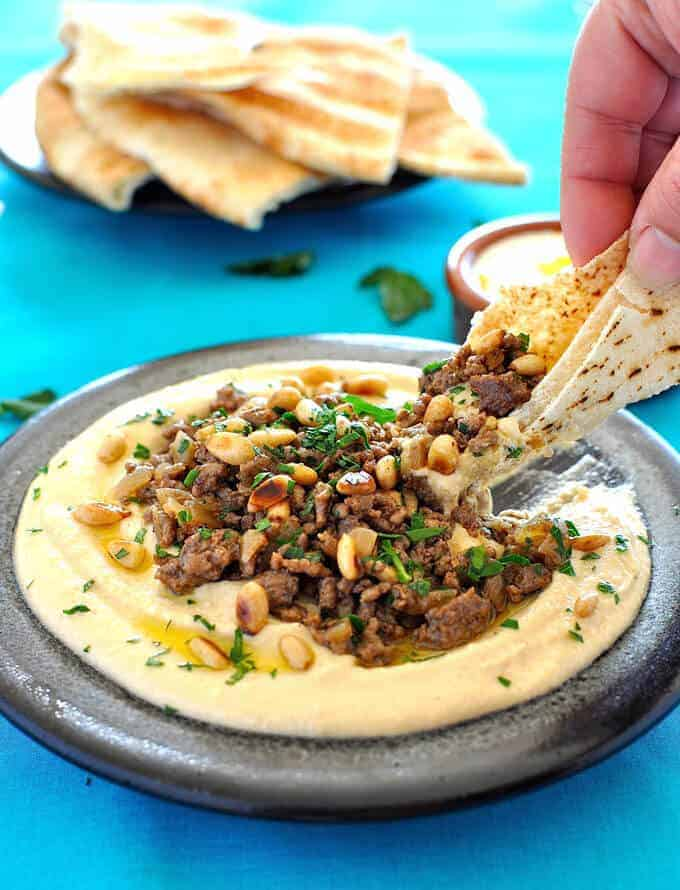

Lamb Chops with Hummus

Introduce a little sunshine to your day whatever the weather with Mediterranean-style lamb chops served on a bed of hummus, roasted tomatoes, olives and feta
Imgredients
- 3 tbsp olive oil, plus extra for drizzling
- 4 garlic cloves, crushed
- 8 lamb chops
- 200g mixed cherry tomatoes on the vine
- 40g pine nuts
- handful watercress
- 12 black olives, pitted and halved
- 50g feta, crumbled
- handful fresh mint, finely chopped, to serve
- 2 flatbreads, warmed, to serve
For the hummus
- 400g can chickpeas, drained and rinsed
- ½ lemon, juiced
- 1 small garlic clove, roughly chopped
- 1½ tsp tahini
- 1 tbsp olive oil
Recipe
STEP 1
Mix the oil and garlic together, then rub half over the lamb chops. Season well, then set aside to marinate. Heat oven to 220C/200C fan/gas 7.
STEP 2
Put the tomatoes on a baking tray, then drizzle over the remaining oil mixture and season. Cook for 8-10 mins until soft, adding the pine nuts for the final 2-3 mins to toast.
STEP 3
Make the hummus by blitzing all the ingredients together with 2-3 tbsp water until smooth.
STEP 4
Heat a griddle pan over a medium-high heat and cook the lamb for 4-5 mins on each side, or until cooked to your liking. Hold the fatty side of the meat against the pan for 2-3 mins until crisp. Cover and set aside to rest for 5 mins.
STEP 5
Spread the hummus over a platter or four plates and top with the tomatoes, a drizzle of olive oil, the lamb and watercress. Scatter over the olives, pine nuts, feta and mint, and serve with the flatbreads.
Click here to go back to previous page